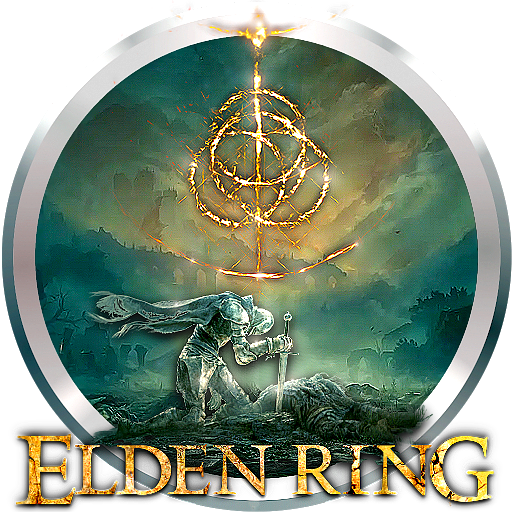
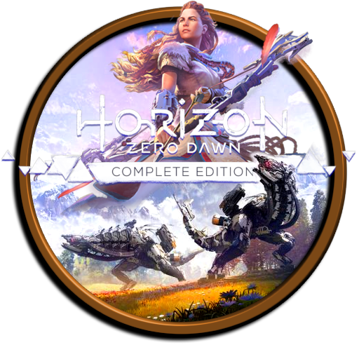
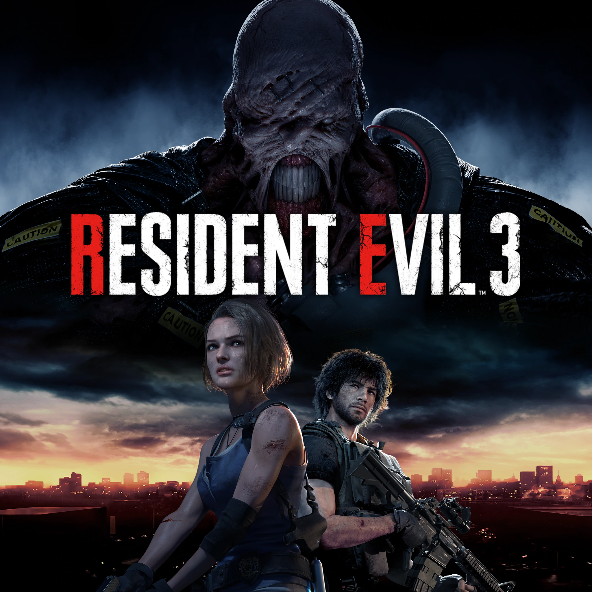

Šeit būs uzskaitīti videospēļu veidi!
| Veidi |
Kas tas? |
Piemēri |
Spēļu ikonas |
| Sporta spēles (sport games) |
Kāda sporta simulācija,parasti var spelet pret botiem vai citiem speletajiem |
Wii, FIFA |
|
| Action(darbības) spēles |
Svarīga ir spēlētāja koordinācija un reakcijas laiks. Šim žanram ir daudz apakšžanru! |
Red Dead Redemption, GTA, Assassin's creed |
 |
| Open-world (atvērtās pasaules) spēles |
Virtuāla pasaule ar saviem mehānismiem un stāstu, kuru spēlētājs var izpētīt! |
Elden Ring, Legend of Zelda:Breath of the wild |
 |
| RPG (role-playing/lomu) spēles |
Viens no vispopulārākajiem veidiem!Spēlēi ir savs stāsts un uzdevumi kas jāpilda lai progresētu tālāk, parasti ir arī savi varoņi, īpaši mehānismi. |
Genshin Impact, Earthwood, Horizon Zero Dawn, Undertale, Final Fantasy, Omori, Yume Nikki, Corpse Party |
 |
| Simulācijas (simulation) spēles |
Parasti atspoguļo darbības, notikumus no reālās dzīves |
Sims 4, Animal Crossing, War Thunder |
|
| Horror (šausmu) spēles |
Spēle ir paredzēta spēlētāja iebiedēšanai, tās centrā ir šausmu fantastika. Visvairāk balstās uz stāsta un vizuālo noformējumu. |
Granny, The eye. The Mimic (roblox), Resident Evil |

|
| Multiplayer (daudzu-spēlētāju) spēles |
Spēles, kurās vienlaicīgi var spēlēt vairāki cilvēki, parasti tās ir tiešsaistes spēles |
Among US, War Thunder, Stardew Valley, GTA, Apex Legends |

|